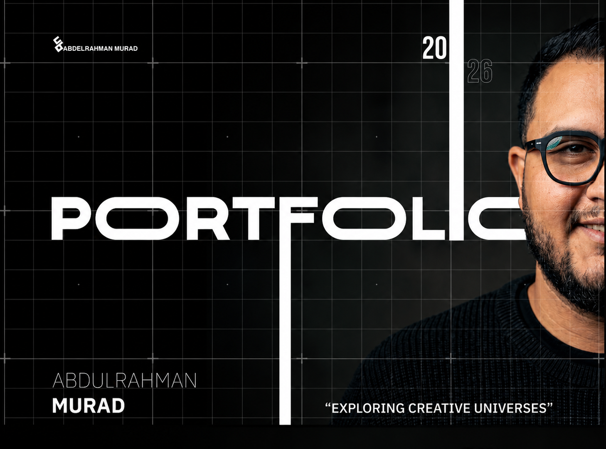
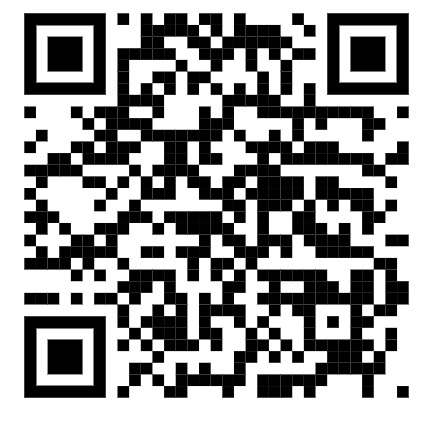

I'm a graphic designer and photographer passionate about creating clean and engaging visual experiences that help brands stand out. I work on social media campaigns, logo design, and company profiles, combining creativity with clear and organized design. I enjoy paying attention to details and always aim to create visuals that reflect each brand's personality in a simple and authentic way.
Adobe Photoshop — Experienced in photo editing, retouching, and creating high-quality visual designs.
Adobe Illustrator — Skilled in creating logos, vector illustrations, and branding elements.
AI Tools — Familiar with AI-powered design tools to enhance creativity and speed up workflows.
Graphic Design — Creating modern and visually impactful designs tailored for brands.
Social Media Design — Designing engaging content and creative visual systems for digital platforms.
Advertising Campaigns — Developing creative concepts and premium visual directions for marketing.
Brand Identity & Logo — Building unique logos and cohesive brand identities for each business.
Company Profile — Designing professional profiles and corporate presentations with clean layouts.
Misr Hollanda (2022–2023) — Designed the logo for a major residential compound in Aswan, gaining hands-on branding experience.
Al-Motakademah Schools (2023–2025) — Contributed to visual design supporting the school's branding and communication materials in Saudi Arabia.
Brandology (2025–Present) — Currently creating branding, social media designs, and visual content for various clients at an advertising agency.
Selected Work
Explore branding, social media, and identity design projects across multiple industries.

PDF Portfolio